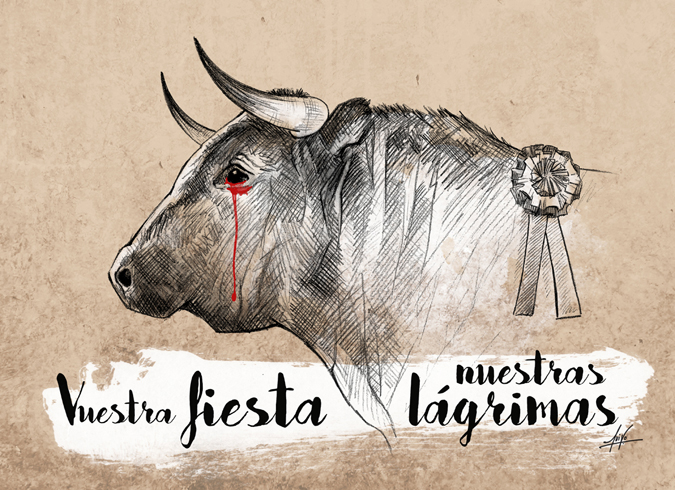
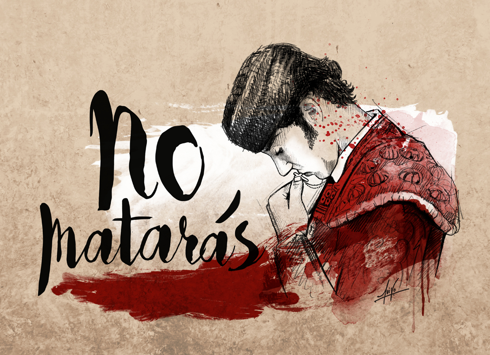

Sigueme en mis redes sociales :)
 Quiroga Alejandra
Quiroga Alejandra Alejandra quiroga
Alejandra quiroga quirogaa.a
quirogaa.a Alejandra Quiroga
Alejandra Quiroga AlejandraQuiroga
AlejandraQuiroga
Al pasar de los años nos damos cuenta de lo que ocasiona el hombre simplemente por cumplir sus caprichos. Todo esto se ve reflejado en las guerras y demas situaciones que se desencadenan por demostrar quien es mas fuerte. Esto tan solo es un ejemplo, a lo que voy es que esto tambien afecta a los animales. De ello viene la ganaderia, muchos de estos animales pasan su vida entera en condiciones deplorables para terminar con una muerte sumamente dolorosa y todo esto solo con el objetivo de obtener dinero sin importar lo demas. Otro ejemplo es la tauromaquia, muchas personas defienden esto diciendo que es tradicion o con argumentos absurdos como "si esto no se hace entonces lo toros se extinguiran", algo que es sumamente ilogico, estos animales tienen una sesibilidad muy alta, pues todos vemos que cuando una mosca se posa sobre su lomo ellos se recogen y les incomoda. Pero al parecer los humanos no piensan en su sufrimiento y deciden pagar para ver el como torturan a un animal.
 
Imagenes tomadas de: https://www.publico.es/fotogalerias/exposicion-antitauromaquia-luiso-garcia-sevilla.html
Proximamente estara el pie de pagina :)